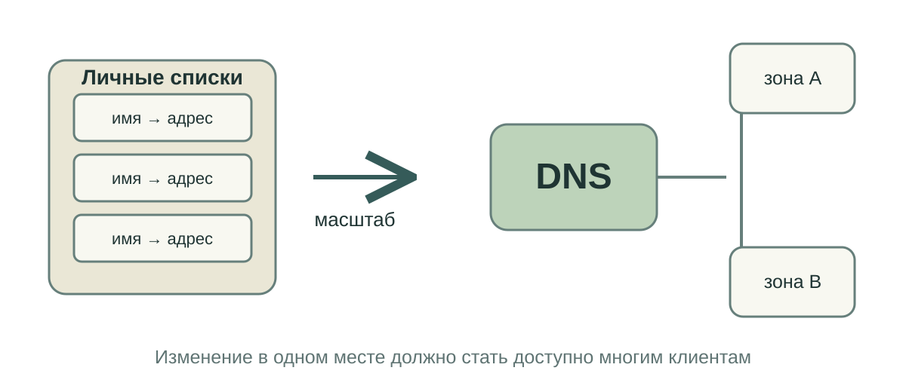
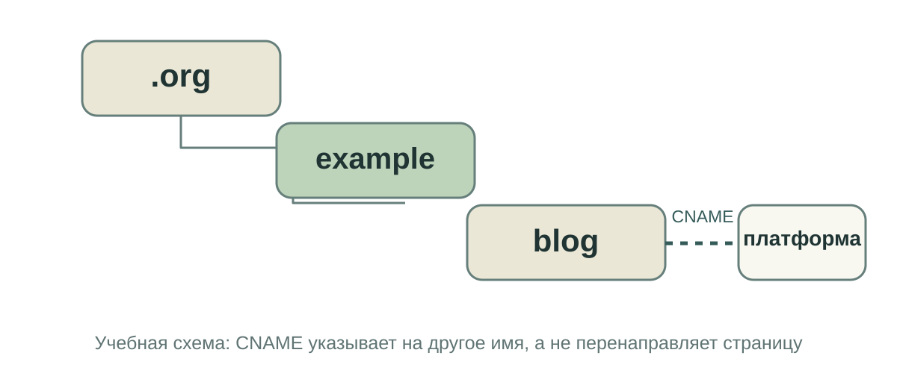
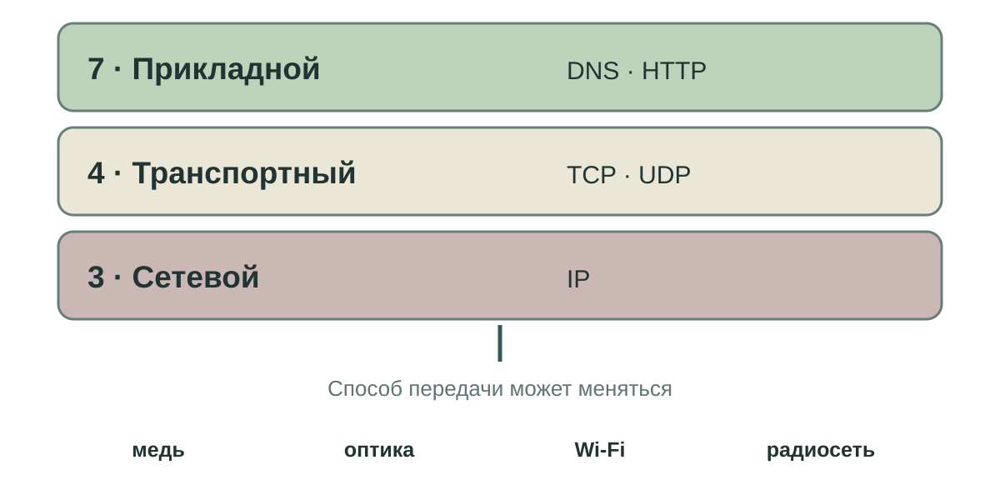
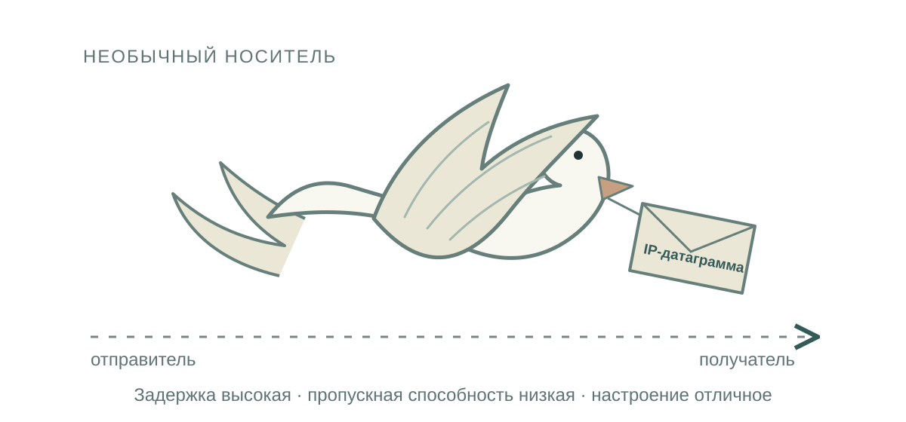
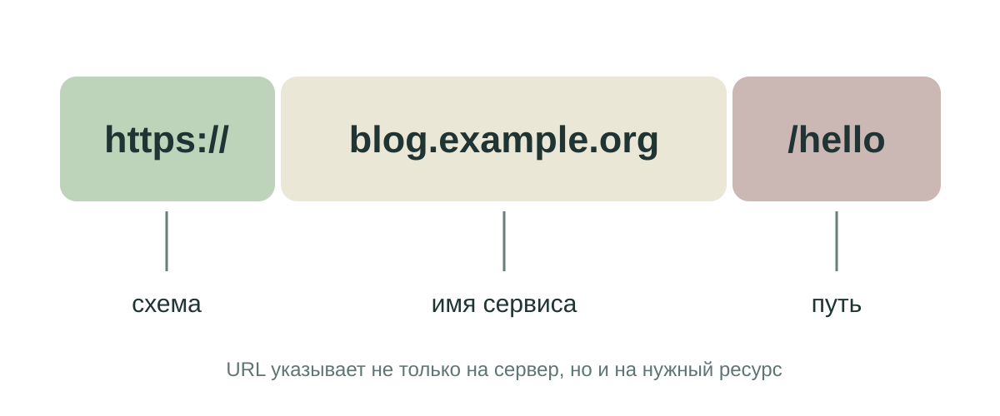
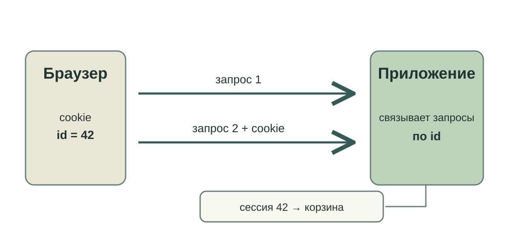
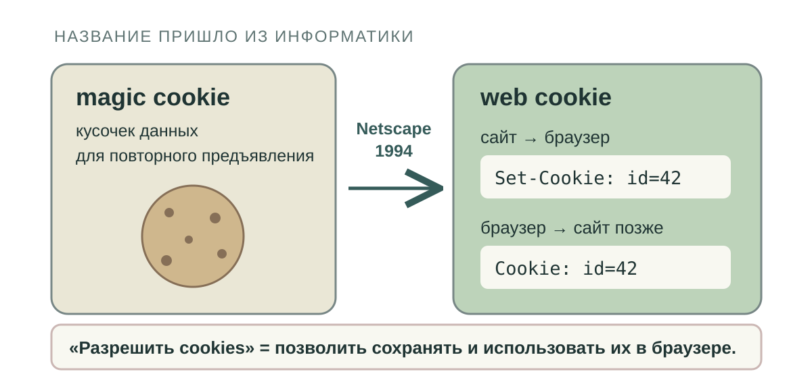
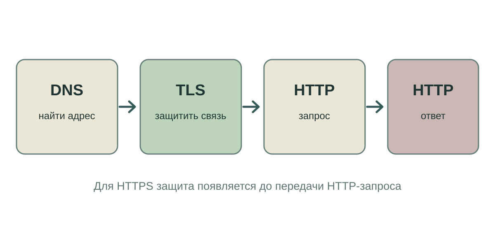

Что происходит после ввода адреса?
https://blog.example.org/hello
Сегодня разберём путь от имени до ответа сервера.
https://blog.example.org/hello
Сегодня разберём путь от имени до ответа сервера.

Если сервис переехал, кто исправит записи на каждом компьютере?

blog.example.org — поддомен внутри управляемой DNS-зоны.

Приложению не нужно знать, по чему идёт сигнал: по кабелю, оптике или радио.

Первоапрельский RFC 1149 · IP-датаграммы на птицах

https://blog.example.org/hello
GET /hello HTTP/1.1
Host: blog.example.org
POST /message HTTP/1.1
Host: blog.example.org
Content-Type: text/plain; charset=utf-8
Content-Length: 13
Привет!Сервис определяет, что делать с полученным запросом.
HTTP/1.1 200 OK
Content-Type: text/html
<h1>Привет!</h1>/missing → 404 Not Found

HTTP сам не хранит историю предыдущих запросов.

Magic cookie — старое название небольшого фрагмента данных, который получают и предъявляют снова.

Сначала защищённое соединение, затем HTTP-запрос и ответ.
Имя → DNS → адрес → соединение → HTTP-запрос → HTTP-ответ
Где возникнет ошибка, если имя не найдено? А если пришёл 404?
На следующей неделе вы опубликуете блог и подключите к нему свой поддомен.